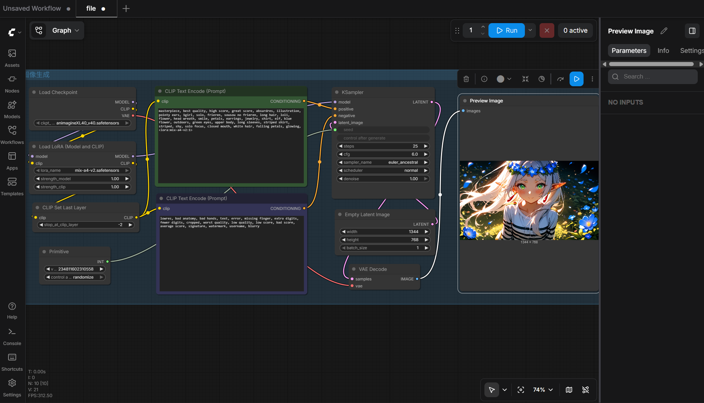

| 總分 | 完成後打勾 | 配分 | 分項描述 |
|---|---|---|---|
| 4 | Simple baseline - 完成ComfyUI建置 | ||
| 4 | Medium baseline - 完成芙莉蓮文生圖 | ||
| 2 | Strong baseline - 替換模型完成辛梅爾文生圖 | ||
| -10 | 沒有寫100字心得 |

1344 * 768
masterpiece, best quality, high score, great score, absurdres, illustration, pointy ears, 1girl, solo, frieren, sousou no frieren, long hair, loli, flower, head wreath, smile, petals, earrings, jewelry, shirt, elf, blue flower, outdoors, green eyes, upper body, long sleeves, striped shirt, striped, shy, solo focus, closed mouth, white hair, falling petals, glowing,
lowres, bad anatomy, bad hands, text, error, missing finger, extra digits, fewer digits, cropped, worst quality, low quality, low score, bad score, average score, signature, watermark, username, blurry
1344 * 768
masterpiece, best quality, high score, great score, absurdres, illustration, 1boy, solo, himmel \(sousou no frieren\), blue hair, short hair, blue eyes, cloak, white cape, armor, look at viewer, male focus,
lowres, bad anatomy, bad hands, text, error, missing finger, extra digits, fewer digits, cropped, worst quality, low quality, low score, bad score, average score, signature, watermark, username, blurry
Completing this text-to-image assignment on my local Windows setup using an AMD graphics card was an incredible learning experience. Because the initial course materials and Jupyter notebook templates were optimized for cloud servers running Linux and NVIDIA's proprietary CUDA framework, running the cells locally generated path and syntax errors. To bypass this, I shifted completely to the standalone ComfyUI portable package built specifically for AMD GPUs running on the DirectML backend. This hands-on workaround taught me how to manually structure an AI workflow by downloading the Obsession checkpoint and style-specific LoRAs directly into my local directories. Recreating the node paths visually, tuning the prompt fields to transition from Frieren to Himmel, and watching my AMD hardware successfully calculate the latent iterations local-side was highly rewarding. It proved that deep learning tasks can be highly flexible, robust, and functional across diverse hardware ecosystems.